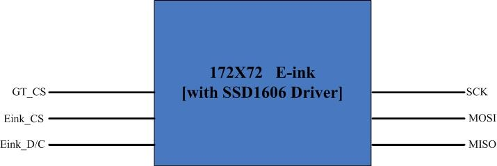
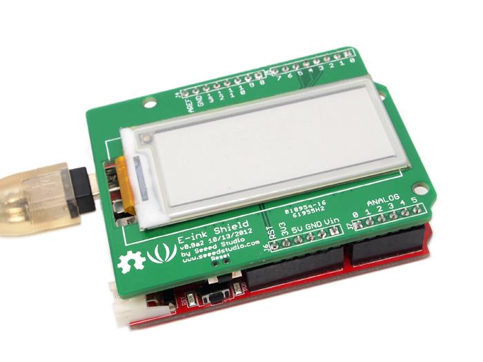
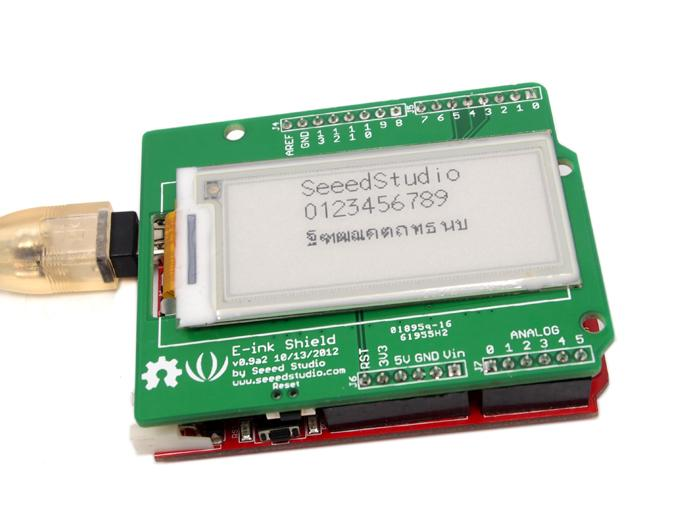
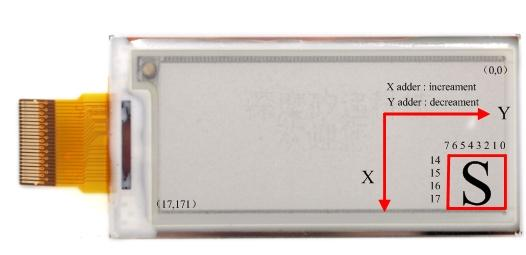
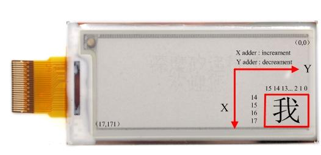
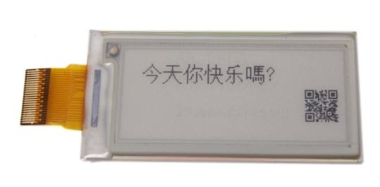

Do you like Amazon Kindle’s E-paper screen? E-ink Display Shield, an E-paper & shield which uses exactly the same techniques, provides you a smooth and clear reading experience for you. It has a super-low power consumption. It won’t consume power until next refreshing of its screen, which enables it to maintain a clear display even in the power-off state. Users can customize texts and position of the characters displayed .Due to the character chip inside, it knows of 175 countries’ language and their respective characters.
Model: SLD01093P

| Item | Min | Typical | Max | Unit |
|---|---|---|---|---|
| Voltage | 4.8 | 5.0 | 5.2 | V |
| E-ink Panel Size | 2.1 | inch | ||
| Active Area | 2.04 | inch | ||
| E-ink Drive Ic | SSD1606 | mm | ||
| Interface Type | SPI | / | ||
| View angle | 0~180 | Deg | ||
| Display Resolution | 172(H)X72(V) | / | ||
| Dot Pitch | 0.28X0.28 | / | ||
| Dimension | 68X63 | mm | ||
| Backlight | --- | / | ||
The display glass may break when being dropped or bumped on hard surface .Please handle with care.

Pins Used for E-ink Control:
D3: VPP, Power Supply for OTP Programming.
D4: GT_CS, GT20L16P1Y select input pin.
D5: Eink_D/C, E-ink Data/Command control pin.
D6: Eink_CS, E-ink select input pin.
D7: BUSY, E-ink Device Busy Signal,When Busy is High, the operation of the chip should not be interrupted, command should not be sent.
Pins Used for SPI Interface：
D10: SPI chip select
D11: SPI MOSI pin
D12: SPI MISO pin
D13: SPI serial clock pin
Following is a test using E-ink to display Chineses and displaying Characters.
1. Connect E-ink Screen with the shield via the FPC connector
2. Connect Arduino with PC via USB cable
3. Stack the E-ink Display shield onto your Arduino board
When you finished the hardware connection, it should look like this.

1. Download the SeeedEink Library.
2. Unzip/copy the including folder to the path: ..\arduino-1.0\libraries
The following program is written to test the function of displaying characters. This demo code can be used as a test program as well as reference for your further exploration of other functions of the board.
Demo 1：Displaying characters
1. Restart the Arduino IDE. Open “displayCharacter” example via the path: File --> Examples --> SeeedEink -->displayCharacter.
2. Learn about the command. In “displayCharacter”, the function we use is described as follow.
3. Upload the code. There should come up several characters on the screen as shown below.

4. If you do not want to change the display, you can remove the screen, the characters will still be displayed.
Note:

Demo 2：Displaying Chinese
1. Open the “displayChinese” example. 2. Learn about the command. In “displayChinese”, the function we use is described as follow.
Note:

2)The unicode_Chinese of the Chinese can see GB2312 (Simplified Chinese) character code table. Every Chinese character size is 16X16.
3. The screen can also display two-dimensional code, just add the function displayTwoDimensionalCode(INT8U x,INT8U y) into the demo code, the starting point of two-dimensional code is located at (x, y). The phone can scan two-dimensional code to enter our website.
1. If you want to display other two dimensional code, just change the values of the array dimensionalData[].
These values can get by converting two-dimensional code to lattice data. My method of getting lattice data is a bit lame, yet you can click here to see it if you are interested.
2. X value must be between 7 to 14. Y value must be between 25 to 171.
3. Upload the code. There should come up several Chinese characters and a two-dimensional code on the screen as shown below.

E-ink Display Shield Library
E-ink Display Shield Eagle File
SSD1606 Datasheet
GT20L16P1Y Datasheet